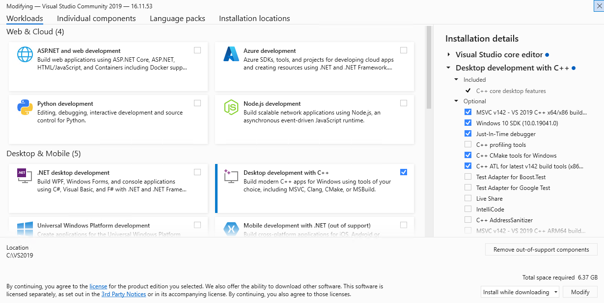

Upgrade Windows Serve 2016 server to Windows 2019 server is again very straight forward. Just mount the ISO image and run the setup from Windows GUI.
Select Windows Server 2019 Standard (Desktop Experience)
Select Keep personal files and apps
When it's done, startup all services to do some sanity check.
Note
Unlike what's Oracle suggest to do, the 19c database we're going to setup is single-tenant. Since this EBS instance is for development purpose, it's no need to make it to PDB; keep it as CDB is simple yet adequate for our use.
Edit the init file of Oracle 12.1 database C:\oracle\[SID]\12.1.0\database\init[SID].ora
Comment out parameter OLAP_PAGE_POOL_SIZE
#olap_page_pool_size = 4194304
Start the database and make sure this parameter value is zero. It is required for 19c upgrade to be successful.
xxxxxxxxxxSQL> show parameter olapNAME TYPE VALUE------------------------------------ ----------- --------olap_page_pool_size big integer 0
Download installation file WINDOWS.X64_193000_db_home.zip from
https://www.oracle.com/ca-en/database/technologies/oracle19c-windows-downloads.html
Create a new folder C:\oracle\[SID]\db19c\home and unzip the file to there
Run C:\oracle\[SID]\db19c\home\setup.exe to setup the Oracle home:
Select "Set Up Software only"
Select "Single instance database installation"
Select "Enterprise Edition"
Select "Use Windows build-in account"
Set Oracle Base to C:\oracle\[SID]\db19c
Copy the whole appsutil folder from C:\oracle\[SID]\12.1.0 to C:\oracle\[SID]\db19c\home
xcopy C:\oracle\[SID]\12.1.0\appsutil C:\oracle\[SID]\db19c\home\appsutil /E /H /Y /I
Copy JRE 1.8 from Oracle home to appsutil and set the NLS data
xxxxxxxxxxSET ORACLE_HOME=C:\oracle\[SID]\db19c\homeSET Path=%ORACLE_HOME%\bin;%ORACLE_HOME%\perl\bin;%PATH%SET PERL5LIB=%ORACLE_HOME%\lib\per\site\libxcopy %ORACLE_HOME%\jdk\jre %ORACLE_HOME%\appsutil\jre /E /H /Y /Icopy %ORACLE_HOME%\jlib\orai18n.jar %ORACLE_HOME%\appsutil\jre\lib\extcd %ORACLE_HOME%\nls\data\oldperl cr9idata.pl
Change registry value of key ImagePath under
HKEY_LOCAL_MACHINE\SYSTEM\CurrentControlSet\Services\OracleService[SID]
Remove the double quotes in the value "c:\oracle\[sid]\12.1.0\bin\ORACLE.EXE" [SID].
This change will fix the bug that DBUA cannot determine the 12.2 DB version
Start the Database Upgrade Assistant c:\oracle\[SID]\db19c\home\bin\dbua.bat
Select the original 12.1 database for upgrade
Enter SYSDBA username SYS and the password
Ignore warning and next
Select all upgrade options
Select I have my own backup and restore strategy
do not create any Listener
Uncheck Enterprise Manager
The whole process could take an hour; the most time-consuming step is the recompiling of invalid objects.
Copy profile file from the 12.1 oracle home to 19c:
copy C:\oracle\[SID]12.2\[SID]_[host].cmd c:\oracle\[SID\db19c\home\[SID]_[host].cmd
Global replace the 12.1 Oracle home path C:\oracle\[SID]\12.1.0 with 19c home path C:\oracle\[SID]\db19c\home
Comment out the variable LOCAL
Edit the context file in 19c c:\oracle\[SID\db19c\home\appsutil\[SID]_[host].xml
Global replace the 12.1 Oracle home path C:\oracle\[SID]\12.1.0 with 19c home path C:\oracle\[SID]\db19c\home
Change the s_database value from db121 to db19
<config_option type="database" oa_var="s_database">db19</config_option>
Change the s_db_homename value to the Oracle home key for 19c:
You can find the key name in C:\Program Files\Oracle\Inventory\ContentsXML\inventory.xml
<HOMENAME oa_var="s_db_homename" osd="NT">OraDB19Home1</HOMENAME>
Change the listener name s_dlsnname to use the new Oracle key
<oa_process_name oa_var="s_dlsnname" osd="NT">Oracle[Oracle Key]TNSListener[SID]</oa_process_name>
Edit the new init[SID].ora file just created in 19c upgrade
Change diagnostic_dest to 19c path
Add parameters
xxxxxxxxxxsec_case_sensitive_logon=FALSEevent="10946 trace name context forever, level 8454144"
Check Windows system variables and remove any entries related to DB 12.1
Using the new profile file, log on to the database, and check the parameters we just set are effective:
xxxxxxxxxxC:\>sqlplusSQL*Plus: Release 19.0.0.0.0 - Production on Fri Nov 28 16:57:38 2025Version 19.3.0.0.0Copyright (c) 1982, 2019, Oracle. All rights reserved.Enter user-name: / as sysdbaConnected to:Oracle Database 19c Enterprise Edition Release 19.0.0.0.0 - Production Version 19.3.0.0.0SQL> show parameter sec_caseNAME TYPE VALUE------------------------------------ ----------- ------------------------------sec_case_sensitive_logon boolean FALSESQL> show parameter eventNAME TYPE VALUE------------------------------------ ----------- ------------------------------event string 10946 trace name context forever, level 8454144
Run adconfig to re-generate all the configuration files
xxxxxxxxxxcd %ORACLE_HOME%\appsutil\binadconfig -contextfile=%CONTEXT_FILE%
Listener files are created in %ORACLE_HOME%\network\admin\[SID_host]. Add this line to file sqlnet.ora to allow passwords be case insensitive:
SQLNET.ALLOWED_LOGON_VERSION_SERVER=10
Run %ORACLE_HOME%\appsutil\scripts\[SID]_[host]\adautocfg.cmd again. This time it should have all error fixed.
Create the CDB MGDSYS schema
xxxxxxxxxxcd %ORACLE_HOME%\rdbms\adminsqlplus / as sysdba @catmgd.sql
Fix Directory objects which are still referenced to 12.1 Oracle home:
xxxxxxxxxxCREATE OR REPLACE directory APPS_DATA_FILE_DIR as '%ORACLE_HOME%\appsutil\outbound\TST_demo'CREATE OR REPLACE directory DATA_PUMP_DIR as '%ORACLE_HOME%/rdbms/log/'
Fix invalid status on package AD_ZD_PREP:
xxxxxxxxxxgrant execute on SYS.XDB_MIGRATESCHEMA to APPS;grant select, insert, update, delete on sys.xdb$moveSchemaTab to apps;grant select, insert, update, delete on sys.xdb$moveSchemaTab to EBS_SYSTEM;grant select on dba_xml_schemas to apps;alter package APPS.AD_ZD_PREP compile;
Fix the desupport of init parameter UTL_FILE_DIR in 19c:
Create a file %ORACLE_HOME%\dbs\[SID]_utlfiledir.txt. From the context file find out the value of these parameters and put them in this txt file
s_db_util_filedir
s_db_data_file_dir
s_ecx_log_dir
s_bis_debug_log_dir
The content of [SID]_utlfiledir.txt will look like:
xxxxxxxxxxc:\tempC:\oracle\[SID]\db19c\home\plsql\tempC:\oracle\[SID]\db19c\home\appsutil\outbound\[SID]_[host]
Create another folder C:\oracle\[SID]\db19c\temp\[SID]
Run this command to create corresponding Directory objects. You need to enter the APPS and EBS_SYSTEM passwords (case must be correct):
xxxxxxxxxxcd %ORACLE_HOME%\appsutil\binperl txkCfgUtlfileDir.pl ^-contextfile=%CONTEXT_FILE% ^-oraclehome=%ORACLE_HOME% ^-outdir=%ORACLE_HOME%\appsutil\log ^-mode=setUtlFileDir ^-servicetype=onpremise
Start all the apps services and the EBS is running on 19c database now.
Uninstall Visual Studio 2017 Community Edition
Run C:\Program Files (x86)\Microsoft Visual Studio\Installer\setup.exe
Select "More" -> "Uninstall" -> OK
Then, uninstall the "Visual Studio Installer"
Download Visual Studio 2019 Community Edition
Start the installer and select the components as shown.
Set the installed location to C:\VS2019

Selected components will be downloaded from Internet and then installation will kick off.
After the installation is done, edit the context file %CONTEXT_FILE% to change the system variable s_MSDEVdir value:
xxxxxxxxxxfrom<msdevdir oa_var="s_MSDEVdir" osd="NT">C:\VS2017\VC</msdevdir>to<msdevdir oa_var="s_MSDEVdir" osd="NT">C:\VS2019\VC</msdevdir>
Run %ADMIN_SCRIPTS_HOME%\adautocfg.cmd to update context variables.
Now the profile is updated. Open a new prompt and run adadamin. Select 2 - Maintain Applications Files and Registry menu -> 1 - Relink Applications programs. Select All to relink all programs.
It will fail due to relinking issues as the following products have dependencies on 32-bit libraries that are incompatible with these versions of Visual Studio:
<PON_TOP>/bin/PONAO.dll
These failures can be ignored during Interactive mode of patching by keying in "Yes"
xxxxxxxxxxAn error occurred while relinking application programs.Continue as if it were successful [No] : YES
Restart all services and make sure the relinked programs run fine.
PHASE D is completed. You can make a backup of the whole OS (VM files).
© 2026 by Christopher Ho. All Rights Reserved